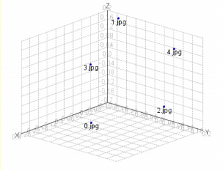

Graphiques
La vue 2D
La vue 2D est un histogramme qui repr�sente la r�partition des distances par rapport aux fichiers
Si l'on observe par exemple une barre bien plus � gauche que la majorit� des autres fichiers, on peut imaginer qu'il y a
une fraude dans les donn�es analys�es.

La vue 3D
Cette 2�me vue peut �tre tr�s utile car elle donne une id�e des distances relatives entre chaque points.
Si il y a une fraude, alors on verra les deux points qui la repr�sentent plus proches que la majorit� des autres points.

Outils
Les graphiques poss�dent des outils pratiques pour faciliter leur exploitation.

On retrouve les fonctions classique, dans l'ordre :
- Centrer les axes
- Zoomer
- Orienter la vue (en 3D seulement)
- Revenir � la position par defaut
- Enregistrer le graphique (au format PNG)